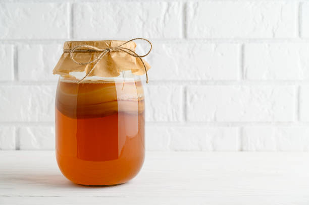

This is a webpage all about me. My likes, dislikes, hopes, dreams, and favorite things.
I am a digital multimedia and computer science teacher with thirteen years experience in the classroom. I have two Puppy Rescue Mission soldier rescues named Lucybelle and Odie. I started my career as a high school CTE/Yearbook teacher in 2004, and am currently teaching in the Academy of Information Technology.
In my spare time, I like to exercise, read, hike, cook, hang out with friends, family, and go to church; not necessarily in that order. My life goals is to write a book someday and hike all over Scotland!
“Never tell people how to do things. Tell them what to do and they will surprise you with their ingenuity.” ~ General George Patton
| Favorite Flower | Sunflower | |
|---|---|---|
| Favorite Time of Day | Coffee Time | |
| Favorite Drink | Kombucha |  |
| Favorite Animal | Wild Horses | |
| Favorite Song | "Tennesse Whiskey" by Chris Stapleton with Justin Timberlake | |
| Favorite Vacation | Israel - The Holy Land |
Phone: 123-345-7890